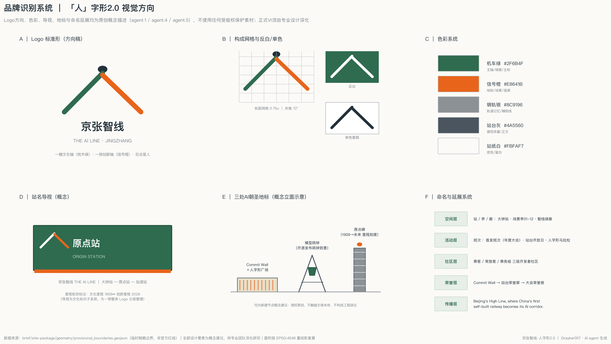
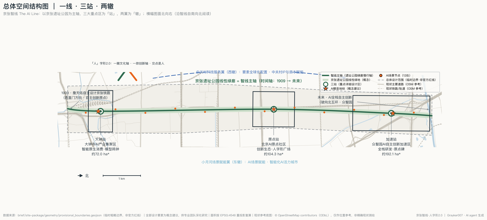
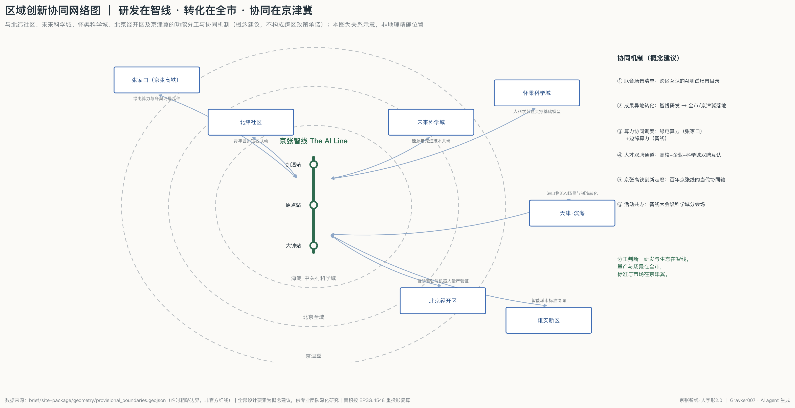
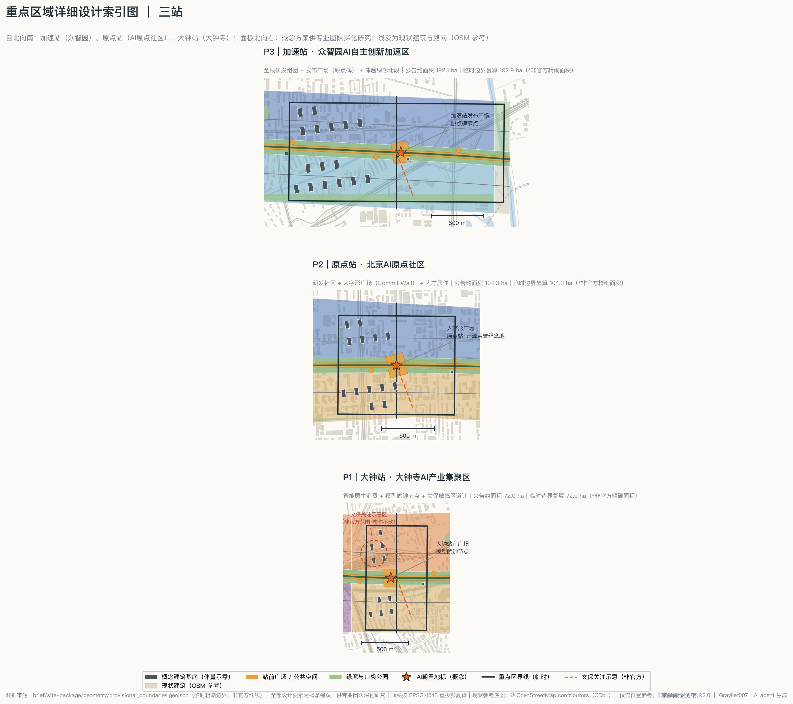
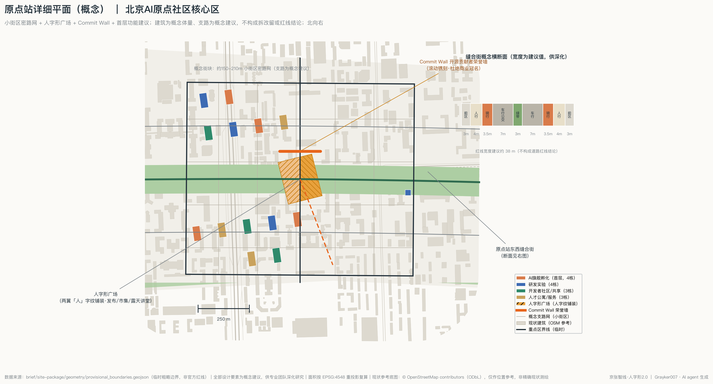
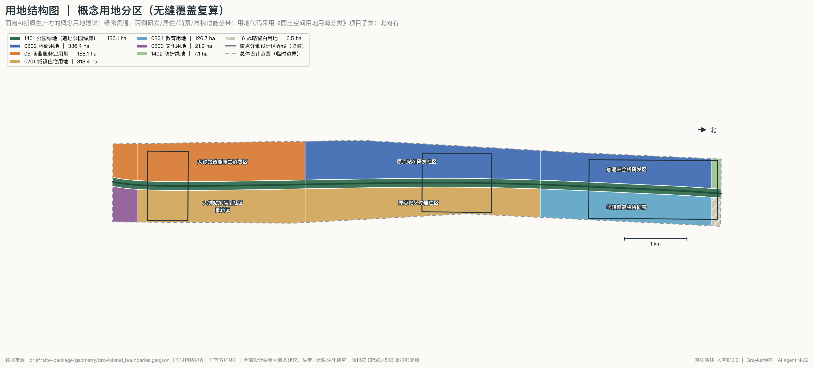
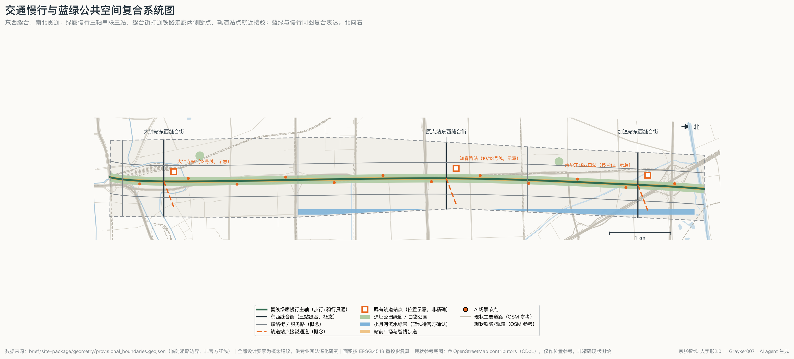
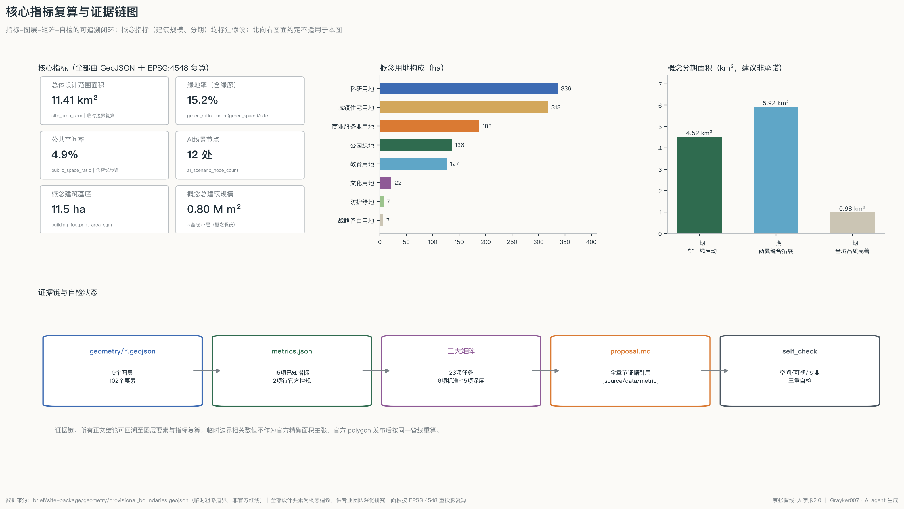

京张智线·人字形2.0——百年京张AI创新带城市设计方案
北京的高线公园，开往人工智能——Beijing's High Line, where China's first self-built railway becomes its AI corridor. 一线串三站（大钟站·原点站·加速站）、两辙翼协同；一撇文化轴、一捺创新轴、交点是人。12 张场景卡、3 处AI朝圣地标、OSM 现状底图上的可复算设计，中英双语完整包＋夜行交互展示页。
京张智线·人字形2.0——百年京张AI创新带城市设计方案
设计依据与资料清单
本方案的第一依据是《百年京张AI创新带城市设计国际方案征集资格预审公告》[source:OFFICIAL-ANNOUNCEMENT] 与《面向全球智能体开展百年京张AI创新带城市设计开源征集任务书摘录》[source:AGENT-TASKBOOK]，机器可读依据是 brief/site-package/ 登记的枚举、指标范围、schema 与临时边界 [source:SITE-PACKAGE]。生成前完整读取了公开资料登记表 [source:SOURCE-REGISTRY] 与阅读导航层 [source:PROCESSED-FACT-PACK]，明确了哪些资料 formal 可用、哪些仅作背景、哪些只是 provisional 线索：本方案不把任何背景或临时资料升级为官方边界、法定控规或投资承诺。
空间底座使用维护者登记的临时粗略边界 [source:BOUNDARY-SOURCE] 与三处重点区临时范围 [source:KEY-AREA-SOURCE]，对应 [data:geometry/site_boundary.geojson#SITE-001]，总体设计范围复算面积 11.41 平方公里 [metric:site_area_sqm]，与公告 11.4 平方公里量级一致；该复算值只用于设计讨论与自检，不构成官方精确面积主张。方案响应 [standard:PROJECT-OFFICIAL-ANNOUNCEMENT] 与 [standard:PROJECT-AGENT-OPEN-CALL-TASKBOOK] 的主控要求，现状诊断与资料缺口详见各章及 [depth:existing_conditions_diagnosis]。正文所有结论均可回到 GeoJSON 要素、metrics.json 指标、三大矩阵与 sources.json/assumptions.json 复核；图纸与 HTML 仅是人类可读表达层，不替代结构化数据。图纸中的现状路网、铁路、水系与建筑轮廓来自 OpenStreetMap [source:OSM-CONTEXT]（© OpenStreetMap contributors，ODbL），仅作为背景参考显示，帮助读者判断方案与真实城市肌理的关系；OSM 数据不进入提交几何图层，不作为任何边界、面积或规划控制依据。
三层范围工作框架
方案按公告三层范围组织工作 [depth:three_level_scope_framework]：统筹研究范围（43.6 km²，北五环—京藏高速—西直门外大街—万泉河路）承担产业生态与未来城市研究；总体设计范围（公告 11.4 km²，本包临时边界复算 [metric:site_area_sqm]）承担控规深度的总体城市设计；重点区域范围合计约 368.4 公顷，由自北向南的众智园AI自主创新加速区、北京AI原点社区、大钟寺AI产业集聚区三处组成 [metric:key_area_count]，临时边界复算合计约 369.3 公顷 [metric:key_area_total_sqm]，与公告值偏差在临时边界精度范围内。
三层范围的空间承载均基于 [data:geometry/site_boundary.geojson#SITE-001] 与 [data:geometry/key_areas.geojson#PROV-KEY-001]。必须强调：当前 SITE_BOUNDARY 与 KEY_AREA 均为 provisional_constraint（official_boundary=false），仅可用于方案生成、可视化与自检，不能作为官方红线、审批依据或精确面积依据 [source:BOUNDARY-SOURCE]。官方 polygon 发布后，用地分区、道路、绿地、公共空间、建筑、分期与全部面积指标需按同一管线重算；本方案的用地无缝分区算法与指标公式已把这次重算的成本降到一次脚本运行。
统筹研究范围产业与未来城市研究
总体概念：人字形2.0。 1909 年詹天佑在青龙桥用「人」字形线路破解陡坡难题，是中国自主工程创新的原点符号；今天中国 AI 走全栈自主创新路线，是同一种精神在算力时代的重演。方案把「人字形」重释为空间结构：一撇是百年文化轴（京张遗址公园线性文化带），一捺是AI创新轴（三区两翼产业带），交点是「人」——呼应任务书宪章「AI 用于增强人、人类做最终判断」[source:AGENT-TASKBOOK]。
命名体系与 Logo 方向（agent.1）。 主名称「京张智线」，英文 The AI Line（借纽约 High Line 铁路遗产转型与伦敦 King's Cross 知识街区的国际认知，一句话可讲清）。命名结构「一线·三站·两辙」：大钟寺=大钟站、AI原点社区=原点站、众智园=加速站；中关村科技服务翼、小月河场景赋能翼为双辙。延展规则：节点命名统一为「站/亭/廊」，活动命名统一为「班次」（如首发班次=年度大会）。Logo 方向为「人」字形铁轨符号：枕木线条自南向北渐变为神经网络脉冲，配色取机车绿＋信号橙＋钢轨银；本方向仅为原创概念描述，不使用任何受版权保护的字体、图片、商标或人物形象。Logo 标准形、构成网格、反白与单色规范、色彩系统（机车绿 #2F6B4F、信号橙 #E8641B、钢轨银 #8C9196、站台灰 #4A5560、站纸白 #FBFAF7）、站名导视与命名延展系统见品牌识别图：

总体空间结构为「一线双轴、三站两辙、多元节点」[depth:overall_spatial_structure]，见下图与 [data:geometry/land_use.geojson#LU-011]。

三大定位、五大功能与三区两翼协同回路。 百年京张文化带由文化轴与文化叙事系统承载（见蓝绿空间与城市风貌章）；都市AI生活体验带由 12 处 AI 场景节点 [metric:ai_scenario_node_count] 与智线步道承载；AI融合创新带由三站产业分工承载。五大功能映射：加速站→AI全栈自主创新体系＋AI治理全球话语权（全栈研发组团＋治理对话会场）；原点站→世界级AI创新生态（开发者社区与孵化生态）；大钟站→智能原生新业态（AI原生消费与商务）；西辙中关村翼→要素全球化配置；东辙小月河翼→AI+场景赋能与智能化AI活力城市。协同回路：研发（加速站）→孵化与社区（原点站）→消费与展示（大钟站）→场景反馈（东辙）→资本与服务再投入（西辙），沿智线形成 15 分钟创新链闭环。
区域创新协同（概念建议）。方案提出「研发在智线、转化在全市、协同在京津冀」的三圈层分工：与北纬社区开展青年创新社区联动；与未来科学城开展能源与先进技术共研；依托怀柔科学城大科学装置支撑基础模型研究；与北京经开区衔接自动驾驶与机器人量产验证；沿百年京张线走向，与张家口构建「绿电算力（张家口）＋边缘算力（智线）」的算力协同调度，并把京张高铁走廊定义为百年京张线的当代协同轴；与天津滨海、雄安新区分别对接港口物流场景与智能城市标准协同。落地机制六项：联合场景清单、成果异地转化、算力协同调度、人才双聘通道、京张高铁创新走廊、活动共办（智线大会设科学城分会场）——均为概念建议，不构成跨区政策承诺，详见区域协同网络图：

全球AI创新生态案例（agent.2，5-8 个）。 以下为基于公开可查信息的概念参考（非正式评分证据，机制转化以本包空间与运营设计为准）[standard:PROJECT-AGENT-OPEN-CALL-TASKBOOK]：
| 案例 | 可借鉴机制 | 转化到智线 | |---|---|---| | 伦敦 King's Cross 知识街区 | 铁路遗产更新+机构联盟品牌 | 遗址公园主轴+「智线」统一品牌 | | 巴黎 Station F | 单体超级孵化器+分级社区 | 原点站开发者社区分级运营 | | Kendall Square（波士顿都会区·剑桥） | 高校-企业-资本步行圈 | 学院路高校协同带+西辙服务翼 | | 新加坡 one-north | 主题园区串联+长期滚动开发 | 三站分工+三期滚动实施 | | 板桥科技谷（首尔都会圈·城南） | 测试场景开放+企业展示常态化 | 三大测试验证场景+场景亭 | | 杭州云栖小镇 | 年度大会驱动+小镇叙事 | 智线大会「首发班次」+车站叙事 |
生态要素机制（土地/空间/产业/资金/人才/算力/数据/场景）分别落到空间与运营各章；其中算力驿站、数据合规试验、场景开放清单为智线特色机制。规划创新点：把「综合规划」理解为文化叙事、产业生态与国土空间三张图的同轴叠加，用一条线性公共空间同时组织三者，为存量高密度城区的国土空间规划提供「线性触媒」思路。
总体设计范围城市更新与控规深度城市设计
总体设计范围以存量更新为主，形成「一轴缝合、分带更新」框架，达到 [standard:MOHURD-CONTROL-DETAILED-PLANNING] 要求的控规深度城市设计与 [standard:MOHURD-URBAN-DESIGN-MEASURES] 的城市设计管理要求：沿智线绿廊为公共空间与文化更新带；西侧自南向北为智能商务更新带（大钟站）、研发社区更新带（原点站）、全栈研发建设带（加速站）；东侧为存量居住品质提升带与学院路高校协同带；北缘为防护绿带与战略留白。功能比例、用地代码与面积见用地章复算表。
更新对象判断（概念）：铁路走廊两侧的低效仓储、临时建筑与断头空间优先转化为绿廊与缝合街；存量住区以改造提升为主，不整片拆除；现状办公楼宇以功能置换注入AI孵化与服务。建筑总规模采用概念测算 [metric:total_floor_area_sqm_concept]（约 80 万平方米新增/置换概念容量，基于概念基底×平均7层假设），法定容积率、高度与密度控制条件在公开资料包中缺失（[metric:floor_area_ratio] 待官方控规条件），全部强度结论以「待确认」表述 [depth:development_intensity_controls]。城市风貌基调「站台灰＋机车绿＋信号橙」，沿智线保持中低强度、面向公园的第五立面与屋顶露台界面，高校段保留校园界面连续绿墙；风貌与体量为概念引导 [depth:height_massing_character]，不构成法定高度控制。京张遗址公园活力带通过 12 处场景节点、三处站前广场与文化展陈系统实现全线活化（见蓝绿空间章）。
重点区域详细设计
三处重点区达到规划综合实施方案的城市设计深度（概念层级）[depth:three_key_area_detailed_design]，每站形成「定位＋空间结构＋建筑更新＋交通慢行＋公共空间＋AI场景＋实施风险」的完整小方案，图示见下。

加速站｜众智园AI自主创新加速区 （[data:geometry/key_areas.geojson#PROV-KEY-001]，公告约 192.1 ha）：定位全栈研发核心。空间结构为「绿廊+双研发翼」；概念建筑组团 16 处（自 [data:geometry/buildings.geojson#BLDG-001] 起编号）呈行列式沿廊布局，留出面向绿廊的发布广场（原点碑节点）。交通上以加速站东西缝合街与清华东路西口站（15号线，位置示意）接驳。风险：北五环噪声防护与官方边界未定，建筑布局仅为体量示意。
原点站｜北京AI原点社区 （[data:geometry/key_areas.geojson#PROV-KEY-002]，公告约 104.3 ha）：定位世界级AI创新生态的社区载体，是三站中做到最深的一站。空间组织采用约 150-210 米的小街区密路网（支路为概念建议），北侧研发社区、南侧人才居住，绿廊交点布置人字形广场——两翼以「人」字纹铺装展开，承载发布、市集与露天讲堂，广场北缘设 Commit Wall 开源贡献者荣誉墙（滚动镌刻、杜绝商业冠名）。首层功能按「AI旗舰孵化—研发实验—开发者社区/共享—人才公寓/服务」四类沿广场与绿廊环布，保证街面连续活力。原点站东西缝合街给出概念横断面：双侧人行道＋分离式骑行道＋公交优先车行＋中央绿带，建议红线宽度约 38 米（供深化，不构成道路红线结论）。知春路站（10/13号线，示意）双向接驳。风险：存量权属复杂，改造范围与产权需专业团队核实。详细平面见下图：

大钟站｜大钟寺AI产业集聚区 （[data:geometry/key_areas.geojson#PROV-KEY-003]，公告约 72.0 ha）：定位智能原生消费与商务。站前广场布置「模型鸣钟」装置（新建节点）；西侧智能原生消费街区、东侧存量社区更新。方案在 [data:geometry/constraints.geojson#CON-HERITAGE-DZS] 标注文保关注示意区：大钟寺古钟博物馆保护范围与建控地带官方数据缺失，所有设计均避让文保本体、不做任何触碰文物的建设建议，待官方文保数据后重校。
AI 创新生态、人才画像与 AI+ 场景
用户画像（agent.3，≥5 类）： ①AI研究员与博士生（学院路高校带，需要低成本会面与算力接入）；②初创创始人（原点站，需要孵化空间与场景入口）；③国际开源开发者（访客+远程，需要英文界面、短居与荣誉激励）；④存量社区居民含老人与家庭（东侧居住带，需要生活服务改善而非被排斥）；⑤青少年与学生（周末科普与工坊）；⑥城市访客/AI朝圣者（打卡与深度体验路线）。
AI 场景卡（≥10 张，含 3 个产业测试验证场景）。 12 张场景卡逐一锚定到公共空间节点 [metric:ai_scenario_node_count]，全部遵守：仅用公开或授权数据、不做人脸身份识别、全程可人工复核、测试场景未获批前不投入运营 [source:AGENT-TASKBOOK]：
| # | 场景卡 | 类型 | 空间锚点 | 服务对象 | 数据与隐私边界 | 人工复核 | |---|---|---|---|---|---|---| | 1 | 京张故事AI导览 | 体验 | 导览起点站（大钟站） | 访客/亲子 | 公开史料；不采集个人影像 | 内容编审团 | | 2 | 无障碍智能服务点 | 民生 | 大钟站广场 | 老人/残障 | 语音交互本地处理 | 社区服务站 | | 3 | 开发者露天讲堂 | 社区 | 原点站绿廊 | 开发者 | 报名数据最小化 | 社区运营方 | | 4 | AI园艺实验角 | 体验 | 绿廊中段 | 居民 | 环境传感，无人像采集 | 园林养护方 | | 5 | 多语言会话亭 | 服务 | 原点站 | 国际人才 | 会话即用即删 | 运营方抽检 | | 6 | 算力驿站 | 产业 | 原点站/加速站 | 初创团队 | 使用者自带数据 | 平台管理员 | | 7 | AI健康小站 | 民生 | 居住带节点 | 居民 | 仅建议不诊断；数据经同意 | 社区医生 | | 8 | 机器人配送接驳点 | 测试 | 东服务路沿线 | 商户/居民 | 低速封闭试验；轨迹脱敏 | 安全员随线 | | 9 | AI艺术装置点 | 文化 | 绿廊北段 | 公众 | 生成内容标注AI来源 | 策展人 | | 10 | 夜间安心步道 | 民生 | 全线步道 | 通勤者 | 照明感应，不做人脸识别 | 物业巡查 | | 11 | 青少年AI工坊 | 教育 | 学院路带节点 | 学生 | 监护人同意制 | 教师驻场 | | 12 | 适老智能服务点 | 民生 | 东侧居住带 | 老人 | 一键呼叫直连人工 | 社区专员 |
三个产业测试验证场景： T1 自动驾驶微循环接驳测试走廊（加速站缝合街—轨道站段，对应 [data:geometry/roads.geojson#ROAD-002] 类缝合街，封闭分时测试）；T2 低速机器人配送测试巷（含场景卡8，东服务路，先仿真后实路）；T3 AI交通信号优化试验区（大钟站周边路口，离线数据回放验证后小范围在线）。三者均表述为测试建议，须经交管、安监等法定程序批准后方可实施，不构成已批准运营。场景-空间-运营映射：每张场景卡对应「空间锚点+运营主体+数据边界+复核机制」四要素，东辙小月河翼作为场景赋能翼承接溢出场景与公共体验路径。企业服务类场景布局在西辙服务翼，为中小企业提供政策、法务、跨境合规的 AI 辅助窗口，由人工律师与政务专员终审。
用地、建筑规模与拆改留方案
概念用地分区把临时边界无缝划分为 13 个分区（亚米级容差内无缝隙、无重叠，经空间自检验证）[depth:land_use_layout]，用地代码采用《国土空间调查、规划、用途管制用地用海分类指南》项目子集 [standard:MNR-LAND-USE-CLASSIFICATION-GUIDE]，起始要素见 [data:geometry/land_use.geojson#LU-001]：

| 用地 | 面积(ha) | 占比 | 布局逻辑 | |---|---|---|---| | 0802 科研用地 | 336.4 | 29.5% | 加速站+原点站研发带 | | 0701 城镇住宅用地 | 318.4 | 27.9% | 东侧存量社区+人才居住 | | 05 商业服务业用地 | 188.1 | 16.5% | 大钟站消费+南门户商务 | | 1401 公园绿地 | 136.1 | 11.9% | 遗址公园绿廊三段 | | 0804 教育用地 | 126.7 | 11.1% | 学院路高校协同带 | | 0803 文化用地 | 21.9 | 1.9% | 南门户文化枢纽 | | 1402 防护绿地 | 7.1 | 0.6% | 北五环防护带 | | 16 战略留白 | 6.5 | 0.6% | 北缘弹性预留 |
建筑层面：概念建筑基底 45 处合计约 11.47 万平方米 [metric:building_footprint_area_sqm]，概念基底密度约 1.0% [metric:building_density]（仅计新增/置换概念组团，不含现状建筑），概念总容量约 80.3 万平方米 [metric:total_floor_area_sqm_concept]（平均 7 层假设，见 assumptions A-MASSING-001），所有体量为示意 [data:geometry/buildings.geojson#BLDG-001]，不构成建设规模承诺；建筑深化以 [standard:MOHURD-ARCH-DESIGN-DEPTH-2016] 为编制深度基准。拆改留逻辑（概念方向，不做地块级结论）[depth:retain_renovate_demolish]：保留——高校校园、成熟住区主体、有再利用价值的工业与铁路构筑物；改造——沿线低效楼宇功能置换、老旧小区综合整治；拆除重建——仅限危旧临时建筑与安全隐患构筑物；新建——三站组团与场景亭。具体地块拆改留须以权属、房屋质量与官方控规为准，本方案不给出地块级拆改留结论。
交通、轨道、市政与公共服务设施
交通组织延续「东西缝合、南北贯通」[depth:traffic_rail_slow_parking]：概念路网中心线总长约 37.6 公里 [metric:road_network_length_m]（见 [data:geometry/roads.geojson#ROAD-001]），由 1 条绿廊慢行主轴（步行+骑行全线贯通）、3 条站点东西缝合街、3 条联络街、2 条智线服务路与 3 条轨道接驳通道构成。缝合街的作用是打通铁路走廊历史形成的东西向断点，使两侧社区在 5 分钟步行内互达绿廊。轨道依托既有 13/10/15 号线车站（位置为示意，非精确站位），提出站城一体化改善方向：出入口面向绿廊增设、非机动车停放扩容、接驳通道风雨连廊化；不提出任何新增轨道线位或工程方案。停车采用存量共享+路外集中概念，缝合街近站段压缩路内停车、还路于慢行。

市政与新型基础设施 [depth:municipal_new_infrastructure]：以「不开新挖、随更新更新」为原则，市政管线随缝合街与更新项目同步改造（能力与容量测算须由专业市政团队完成，本方案不做专业测算结论）；新型基础设施布局三类概念设施——算力驿站（边缘算力+开发者接入，原点站/加速站）、智能杆件（照明+环境传感+通信合杆，沿智线步道）、数据合规屋（场景数据脱敏与审计，原点站）。公共服务设施沿站配置：国际人才服务中心（西辙）、社区嵌入式服务（东侧居住带）、青少年科普点（学院路带），与场景卡 2/7/11/12 共用空间载体。
蓝绿空间、公共空间与城市风貌
蓝绿系统以遗址公园绿廊为脊 [depth:blue_green_public_space]：绿地总量约 173.3 万平方米 [metric:green_space_area_sqm]，绿地率约 15.2% [metric:green_ratio]（含绿廊三段 [data:geometry/green_space.geojson#GREEN-01]、小月河滨水绿带与口袋公园；小月河蓝线以官方数据为准）。公共空间总量约 56.1 万平方米 [metric:public_space_area_sqm]，占比约 4.9% [metric:public_space_ratio]，由三处站前广场、贯通智线步道与 12 处场景节点组成。绿地率支撑人才日常跑步通勤与户外交流，公共空间率支撑发布、市集、展览等创新交往——两个比例都将在官方边界与现状绿地数据到位后重算并对标法定标准。
AI 朝圣地标（agent.4，≥3 处，全部为概念建议）： ①人字形广场＋Commit Wall（原点站，[data:geometry/public_space.geojson#PUB-JZ]）——广场铺装以「人」字形双轴展开，荣誉墙滚动镌刻对中国开源AI生态有实质贡献的开发者与项目（入选机制见分期与运营章，杜绝商业冠名）；②模型鸣钟（大钟站，[data:geometry/public_space.geojson#PUB-DZ]）——呼应大钟寺古钟文化的新建声音装置，重要开源模型发布时鸣钟致意，装置远离文保本体；③原点碑（加速站，[data:geometry/public_space.geojson#PUB-JS]）——中国AI里程碑时间轴装置，呈现从1909年京张铁路到当代AI全栈创新的「自主创新谱系」。荣誉展示体系三级：Commit Wall（个人/项目）—站台荣誉屏（月度）—智线大会荣誉册（年度）。公共空间组件库：站台座椅、枕木纹铺装、信号灯语标识、场景亭、智能杆件五类标准件，保证全线风貌一致性。
文化叙事（agent.5）。 主线「从自主铁路到自主智能」：1909 詹天佑人字形铁路（自主工程）→1980s 中关村电子一条街（自主产业）→2020s AI 全栈自主创新（自主智能），三个「自主」构成中国创新的连续谱系，京张智线是少有的能在物理空间上同时触摸三段历史的场所。空间文化系统：南段「铁路记忆」（历史展陈+文化枢纽）、中段「创新现场」（开发者社区+荣誉体系）、北段「未来实验」（测试场景+发布广场）。导视符号系统以「站牌+里程碑」为母题：全线里程桩以 1909—未来的「时间里程」双标注，导视用色沿用机车绿/信号橙，与一带整体 Logo 系统分层管理（文化标识为子系统，不混用）。国际传播叙事一句话版："Beijing's High Line, where China's first self-built railway becomes its AI corridor."所有历史表述以公开史料为准，不虚构历史细节。
更新项目清单、实施政策与分期计划
概念更新项目清单（类型/位置/依赖）[depth:renewal_project_list]：
| # | 项目 | 类型 | 位置 | 分期 | 实施依赖 | |---|---|---|---|---|---| | 1 | 智线绿廊贯通与步道 | 公共空间 | 全线 | 一期 | 官方绿廊边界 | | 2 | 三站站前广场与地标 | 公共空间 | 三站 | 一期 | 文保/权属核实 | | 3 | 东西缝合街（3条） | 交通更新 | 三站 | 一期 | 交通评估 | | 4 | 原点站开发者社区 | 功能置换 | 原点站 | 一期 | 楼宇权属 | | 5 | 算力驿站与数据合规屋 | 新基建 | 原点/加速站 | 一期 | 电力与合规审查 | | 6 | 加速站研发组团 | 新建/置换 | 加速站 | 二期 | 官方控规条件 | | 7 | 大钟站智能消费街区 | 改造 | 大钟站 | 二期 | 商户协同 | | 8 | 东侧社区综合整治 | 民生更新 | 居住带 | 二期 | 居民参与 | | 9 | 小月河滨水绿带 | 蓝绿更新 | 东辙 | 二期 | 官方蓝线 | | 10 | 北缘防护带与留白启动 | 生态/弹性 | 北缘 | 三期 | 战略评估 |
分期为概念建议 [depth:phasing_implementation]（见 [data:geometry/phasing.geojson#PHASE-1]）：一期「三站一线启动」约 4.52 km² [metric:phase1_area_sqm]，以公共空间与轻改造快速成势；二期「两翼缝合拓展」约 5.92 km² [metric:phase2_area_sqm]；三期「全域品质完善」约 0.98 km² [metric:phase3_area_sqm]。政策工具建议（供决策参考）：存量楼宇功能转换正面清单、场景开放「揭榜挂帅」机制、公共空间社会化运营协议、开源贡献荣誉的公共认定机制。
长期运营（agent.6）。 年度活动体系「班次制」：首发班次（年度智线大会，发布+荣誉+招引）、月度站台开放日（三站轮值，社区市集+技术演示）、人字形马拉松（半年一次的开源黑客松，赛题来自场景开放清单）。开发者社区运营三级：注册乘客（线上会员）—常旅客（驻场团队）—乘务组（社区志愿治理），运营主体建议为「政府指导+专业运营公司+社区共治」。场景开放机制：每季度发布场景清单与数据接口白名单，测试期免场地费、成果须公开复现报告。转化路径：活动流量→场景测试→企业落地→楼宇载体（见用地章空间供给），品牌资产沉淀于「智线」IP。国际传播：英文站点、全球开发者驻留计划、与国际线性公园及创新街区网络结对。以上活动、政策与招引均为概念建议，不构成政府既定安排或资金承诺。
指标体系、面积复算与合规矩阵
全部已知指标由 GeoJSON 于 EPSG:4548 重投影复算 [depth:metrics_recalculation]，与 metrics.json 一致，并通过空间自检的独立复核（site_area_sqm、green_ratio、public_space_ratio 三项双向校验通过）：

核心指标的设计含义：总面积 [metric:site_area_sqm] 是全部比例指标的分母基准；绿地率 [metric:green_ratio] 支撑人才生活品质与线性公园主轴的成立；公共空间率 [metric:public_space_ratio] 支撑创新交往密度；概念基底与容量（[metric:building_footprint_area_sqm]、[metric:total_floor_area_sqm_concept]）说明产业空间供给量级；路网长度 [metric:road_network_length_m] 与场景节点数 [metric:ai_scenario_node_count] 说明可达性与场景密度；三期面积（[metric:phase1_area_sqm]、[metric:phase2_area_sqm]、[metric:phase3_area_sqm]）说明实施节奏；重点区数量与合计面积（[metric:key_area_count]、[metric:key_area_total_sqm]）与公告对标。容积率与高度控制两项为 unknown（缺官方控规条件），已在 metrics.json 注明原因。合规覆盖：compliance_matrix.json 覆盖公告 1.3/1.4/1.5 全部必选任务与 agent.1—agent.6 全部 6 项任务；standard_matrix.json 覆盖全部 6 项标准；design_depth_matrix.json 全部 required 深度项为 complete，证据链闭合于「图层→指标→矩阵→正文→自检」。
风险、版权与合规说明
主要风险与缺口 [depth:risk_missing_data]：①官方 SITE_BOUNDARY/KEY_AREA polygon 缺失——全部空间与面积结论为临时精度，已在各章标注，官方数据发布后按同一管线重算；②法定控规条件（容积率/高度/密度/绿地率/退线）缺失——强度类结论全部「待确认」；③文保数据缺失——大钟寺相关设计以避让为原则并设关注示意区 [data:geometry/constraints.geojson#CON-HERITAGE-DZS]；④权属与现状建筑数据缺失——拆改留仅为方向性逻辑；⑤场景合规——测试场景须经法定审批，隐私边界已逐卡写明并保留人工复核。版权与生成方式：本包全部文本、图纸、GeoJSON、HTML 由 AI agent（Claude Fable 5，操作者 Grayker007）基于仓库公开资料生成，未使用任何第三方受版权素材、字体图库或商标；Logo 与装置均为原创概念描述；许可为 COMMUNITY-DISPLAY-ONLY，详见 report/copyright_statement.md。本方案为开放共创建议，不替代正式规划，不构成政府审定结论或实施承诺 [source:AGENT-TASKBOOK]；所有空间建议均为概念建议、参考方案，可供专业团队深化研究。
参考资料
brief/site-package/design_brief.json、agent_taskbook.json、allowed_design_space.json[source:SITE-PACKAGE]brief/site-package/geometry/provisional_boundaries.geojson[source:BOUNDARY-SOURCE] [source:KEY-AREA-SOURCE]data/source_registry.json[source:SOURCE-REGISTRY]；data/processed/agent_fact_pack.md[source:PROCESSED-FACT-PACK]- 官方公告 [source:OFFICIAL-ANNOUNCEMENT]；面向智能体任务书摘录 [source:AGENT-TASKBOOK]
- 现状参考底图：OpenStreetMap（© OpenStreetMap contributors，ODbL）[source:OSM-CONTEXT]，仅作图面背景参考
- 标准响应：[standard:PROJECT-OFFICIAL-ANNOUNCEMENT] [standard:PROJECT-AGENT-OPEN-CALL-TASKBOOK] [standard:MOHURD-URBAN-DESIGN-MEASURES] [standard:MOHURD-CONTROL-DETAILED-PLANNING] [standard:MNR-LAND-USE-CLASSIFICATION-GUIDE] [standard:MOHURD-ARCH-DESIGN-DEPTH-2016]
- 本包结构化证据：
geometry/*.geojson、metrics.json、三大矩阵、sources.json、assumptions.json、self_check.json